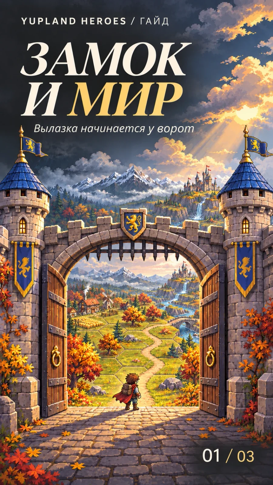
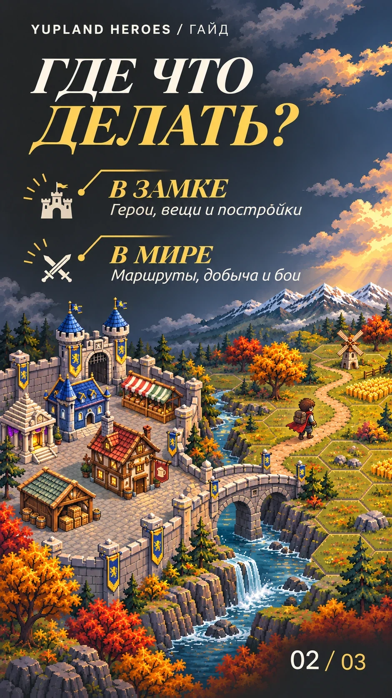
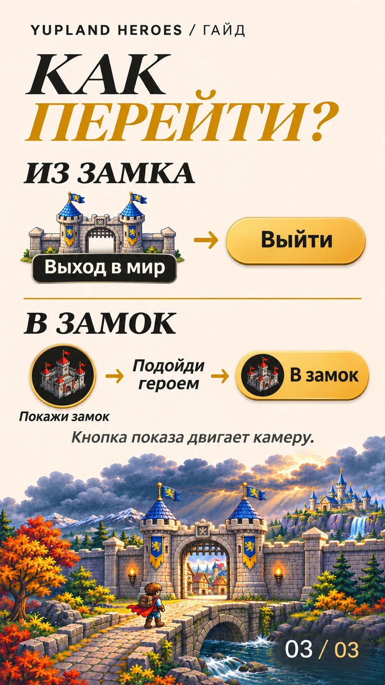

Замок и мир: где решать разные задачи
-
Обложка 
-
Шаг 01 
-
Шаг 02 
Где что делать
В замке открой таверну, чтобы посмотреть героя и его вещи, или склад, чтобы перенести предмет в рюкзак. За постройками и оформлением загляни в ратушу.
В мире прокладывай маршруты, добывай ресурсы и сражайся. Перемещение карты меняет обзор. Чтобы герой дошёл до цели, выбери маршрут.
Например, топор со склада сначала перенеси в рюкзак героя. За деревом отправляйся на карту.
Как перейти между замком и миром
Из замка в мир. Нажми на ворота с подписью «Выход в мир». Подтверди переход кнопкой «Выйти». Если окно предлагает вернуться на свой остров, нажми «На остров».
Из мира в замок. Если герой далеко, нажми круглую кнопку с замком внизу слева. Камера покажет замок, а герой останется на месте. Подведи героя к замку или ратуше. Когда появится золотая кнопка «В замок», нажми её.
Перед новой вылазкой открой рюкзак выбранного героя и проверь, что вещь уже в нём.
Дальше — как читать панели мира.